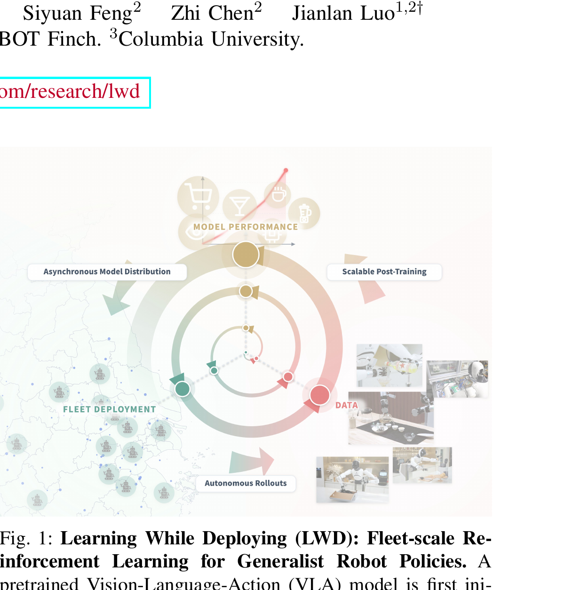

Learning While Deploying: Fleet-Scale Reinforcement Learning for Generalist Robot Policies
Wang 等 · AGIBOT / Columbia University · 2026 · arXiv:2605.00416 · Zotero U3CA8A8V
它的单位不是一台机器人一次实验，而是可持续运行的 fleet 数据闭环。
§1 Introduction：作者为什么必须做这篇工作
离线预训练无法覆盖部署后的长尾失败、任务变化和人类纠正。单机器人在线 RL 又太慢，且每台机器的经验彼此隔离。LWD 把部署本身变成持续数据源：机器人 fleet 采集自主 rollout 与人类 intervention，共享经验后再统一更新 generalist VLA。
算法上，DIVL 用 distributional implicit value learning 在异质、稀疏奖励 fleet 数据上估价值；QAM 用 adjoint matching 把 Q 信息传回 flow action generator。系统形成 deployment → data → post-training → redeployment 的持续闭环。
展开原文 · 核心动机
“closes the loop between deployment, shared physical experience, policy improvement, and redeployment”
§2 Related Work：它接在哪些路线之后
经典 Learning from Demonstrations 假设训练结束后部署；DAgger 在部署中收纠正，但主要做监督聚合。offline-to-online RL 能持续改进，却通常在单任务、单机器人上验证。
LWD 将 fleet learning 与 flow VLA 结合。与 EXPO-FT 的单任务分钟级适配相比，它关注多机器人、多任务、数分钟长程操作的经验共享；与 RISE 的 imagined RL 不同，它使用真实 fleet 经验。
§3 问题设定：状态、动作与反馈
16 台双臂机器人部署同一 generalist policy，持续上传成功、失败与干预轨迹。DIVL 估计回报分布，QAM 更新 flow policy，版本再下发到 fleet。
§4 方法总览：沿原图走一遍
上一节确定了学习接口；现在看论文原图，追踪观测如何变成动作、环境反馈又如何回到可训练模块。

1. fleet 部署 generalist VLA
同一 generalist VLA 被版本化部署到 16 台双臂机器人。每台机器执行不同任务与初态，系统记录策略版本、硬件身份和任务元数据，保证后续能区分模型问题与单机故障。
输入是什么：已经采集的专家演示、机器人交互轨迹或评测样本。每条数据通常包含观测、动作，以及可能存在的奖励或下一状态。
这一步究竟做什么：同一 generalist VLA 被版本化部署到 16 台双臂机器人。每台机器执行不同任务与初态，系统记录策略版本、硬件身份和任务元数据，保证后续能区分模型问题与单机故障。
输出到哪里：可发送给机器人控制器的动作，以及执行后重新观测到的真实状态。这个结果会交给下一步“自主 rollout 与人类干预进入共享池”继续处理。
为什么不能省略：机器人动作会改变下一次观测；只有执行后重新读取现实，才能发现预测误差并阻止错误连续累积。
2. 自主 rollout 与人类干预进入共享池
自主成功/失败、人工 intervention 与恢复轨迹统一进入 fleet buffer。共享池让一台机器人遇到的长尾状态服务所有机器人，但也必须按任务重采样，防止高频简单任务淹没长程经验。
输入是什么：来自上一步“fleet 部署 generalist VLA”的产物：可发送给机器人控制器的动作，以及执行后重新观测到的真实状态。本步骤还会按论文设置读取当前条件、时间步或训练信号。
这一步究竟做什么：自主成功/失败、人工 intervention 与恢复轨迹统一进入 fleet buffer。共享池让一台机器人遇到的长尾状态服务所有机器人，但也必须按任务重采样，防止高频简单任务淹没长程经验。
输出到哪里：一个或多个候选未来、动作或轨迹，以及必要的中间状态。这个结果会交给下一步“DIVL 学稳健的分布式价值”继续处理。
为什么不能省略：学习算法只能从它见过的经历中改进；这一步决定训练数据是否覆盖成功、失败和恢复状态。
3. DIVL 学稳健的分布式价值
DIVL 学习回报分布的多个分位数，而不是只拟合平均 Q。这样能表达跨机器人和跨任务的长尾不确定性，并在稀疏奖励下给 QAM 提供更稳健的价值目标。
输入是什么：来自上一步“自主 rollout 与人类干预进入共享池”的产物：一个或多个候选未来、动作或轨迹，以及必要的中间状态。本步骤还会按论文设置读取当前条件、时间步或训练信号。
这一步究竟做什么：DIVL 学习回报分布的多个分位数，而不是只拟合平均 Q。这样能表达跨机器人和跨任务的长尾不确定性，并在稀疏奖励下给 QAM 提供更稳健的价值目标。
输出到哪里：经过本步骤处理、含义更明确的中间结果。这个结果会交给下一步“QAM 改进 flow policy 并重新部署”继续处理。
为什么不能省略：它承担上下两步之间的接口；缺少它，前一步产生的信息无法以正确格式或正确含义传到下一步。
4. QAM 改进 flow policy 并重新部署
QAM 把 critic 的动作改进方向匹配到 flow velocity，再训练并发布新版本。新策略先经过回归与安全 gate 才重新部署，形成 fleet experience → policy update → redeployment 的持续闭环。
输入是什么：来自上一步“DIVL 学稳健的分布式价值”的产物：经过本步骤处理、含义更明确的中间结果。本步骤还会按论文设置读取当前条件、时间步或训练信号。
这一步究竟做什么：QAM 把 critic 的动作改进方向匹配到 flow velocity，再训练并发布新版本。新策略先经过回归与安全 gate 才重新部署，形成 fleet experience → policy update → redeployment 的持续闭环。
输出到哪里：可发送给机器人控制器的动作，以及执行后重新观测到的真实状态。这是图中这条链路的最终产物，随后会进入真实执行、模型更新或指标评测。
为什么不能省略：机器人动作会改变下一次观测；只有执行后重新读取现实，才能发现预测误差并阻止错误连续累积。
§5 机制细拆：为什么这个接口可能有效
分布式价值不仅预测均值，还表达异质任务与稀疏回报的不确定性；QAM 将价值梯度匹配到速度场。
统一训练 generalist flow VLA，再以版本化发布返回 fleet。
它的单位不是一台机器人一次实验，而是可持续运行的 fleet 数据闭环。
§6 目标函数：公式逐项读
下面的教学化表达抓住论文的主要更新方向；读它时不要只看符号，要检查回报作用在哪个变量、哪些部分保持冻结。
- $Z(s)$
- 状态回报的完整分布，而非单一均值。
- $\tau$
- 分位数索引，帮助处理异质和长尾数据。
- $\nabla_a Q$
- critic 对动作的改进方向。
- AdjointMatch
- 把终端价值方向转成 flow velocity 可学习的监督。
§7 训练与评测：数字在什么条件下成立
16 台双臂机器人、8 个真实操作任务，包括语义补货与 3–5 分钟长程任务；单一 generalist policy 随 fleet 经验增长迭代。
| 学习接口 | 16 台双臂机器人部署同一 generalist policy，持续上传成功、失败与干预轨迹。DIVL 估计回报分布，QAM 更新 flow policy，版本再下发到 fleet。 |
|---|---|
| 信用分配 | 分布式价值不仅预测均值，还表达异质任务与稀疏回报的不确定性；QAM 将价值梯度匹配到速度场。 |
| 更新范围 | 统一训练 generalist flow VLA，再以版本化发布返回 fleet。 |
| 实验覆盖 | 16 台双臂机器人、8 个真实操作任务，包括语义补货与 3–5 分钟长程任务；单一 generalist policy 随 fleet 经验增长迭代。 |
§8 结果怎么读：证据与归因
论文报告平均成功率达到 95%，长程任务收益最大。真正的证据是随累计 fleet experience 的学习曲线和跨机器人共享，而不只是最终数字。
§9 复现与工程检查
记录每台机器人贡献量、干预比例和任务分布；防止高频简单任务淹没长程任务；跟踪每次发布的回归与安全 gate。
- 先复现冻结的 SFT/BC 基线，再打开 RL 或偏好更新。
- 同时记录环境步、墙钟时间、人工干预、策略版本和推理延迟。
- 逐任务保存失败轨迹，避免平均成功率掩盖分布偏移。
§10 适用边界与研究启发
fleet 基础设施成本高；非 IID 数据和硬件差异可能污染 critic；持续部署需要比论文指标更严格的回滚、权限和安全审计。